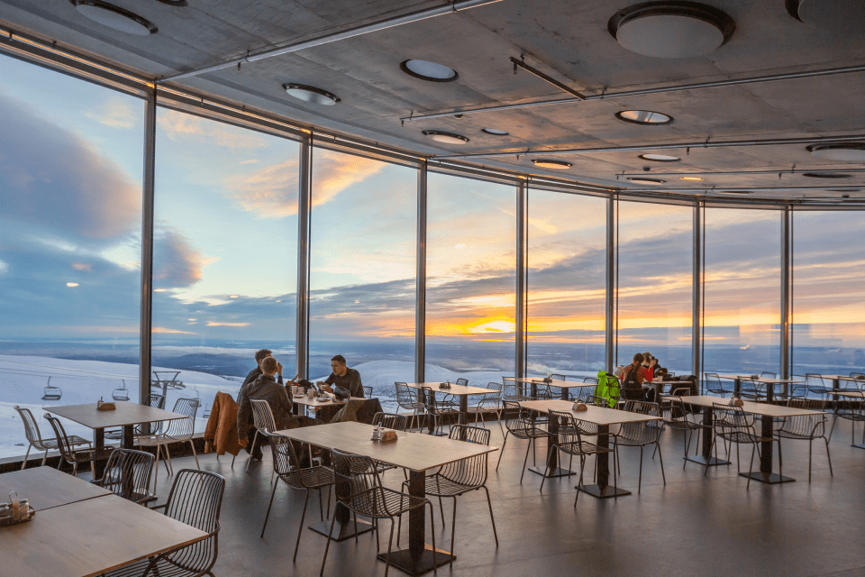
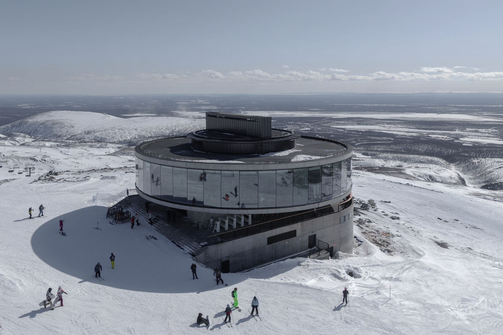

Большой Вудъявр или BigWood
Отличается идеально подготовленными сертифицированными трассами, располагает разными возможностями для катания, развитой инфраструктурой, высоким уровнем сервиса. Многие считают данный комплекс одним из лучших мест для отдыха и развлечений в холодный сезон на Кольском полуострове.
1. Длительный сезон катания – с начала ноября по конец мая.
2. Развитая современная инфраструктура.
3. Возможность увидеть яркое северное сияние (с 5 по 28 декабря).
Климат в области, где расположен BigWood, довольно суровый, но условия для поклонников такого вида спорта считаются неплохими. Сильные морозы для этих мест явление не особо частое, хотя температура может ежедневно колебаться от +1 градуса до -25 и даже более.
Инфраструктура представлена современным оборудованием, трассами мирового уровня, заведениями общественного питания, гостиницами, магазинами. Еще большой популярностью здесь пользуется сноупарк, который ценится любителями акробатических трюков и сложных элементов. Есть возможность для фристайла, фрирайда, условия для фан-карва (уклон 40%).
Горнолыжный комплекс, предлагает около трех десятков разных трасс, протяженностью порядка 30 тыс. м. и перепадом высот 650 м. Они подходят как профессиональным лыжникам, так и новичкам и даже малышам.
Как и на многих крупных горнолыжных курортах, маршруты в Большом Вудъявре обозначены разными цветами, в зависимости от их сложности. Большая часть синие, подходящие как для любителей, так и для профи.
Перечень их следующий:
1. Синие (средние) – под номерами 1, 2, 5, 7, 8, 12, 17, 18, 21, протяженностью 1450, 1690, 1430, 1890, 90 и 750 метров соответственно;
2. Красные (сложные) - № 3, 9, 15, 20, 22, 23, протяженность 1040, 1860, 1230, 650, 1200 и 2500 м.;
3. Черные (очень сложные) – 4, 6, 10, 14, 16, длиной 500, 1340, 600, 1300 и 350 м.
Из всех представленных комплексов 15 оборудованы фонарями, что позволяет кататься в темное время суток. Именно здесь находится самый длинный в стране спуск (3400 м) с искусственным освещением. Для новичков оборудован учебный склон с отдельным подъемником.
К вершинам трасс отдыхающих доставляют несколько канатных дорог, которые за час способны переправить более 1700 человек. Из них три - канатно-буксировочные, одна – канатно-кресельная и одна – гондольно-кресельная. Еще обустроена ленточная трасса LST.
Работают склоны каждый день с 10 часов утра до 7 часов вечера. При неблагоприятных погодных условиях часть подъемников может быть остановлена.
Уникальное место на вершине Хибин. Благодаря панорамному остеклению высотой 5 метров, обзору на 360° и особой «ПАРЯЩЕЙ» конструкции здания, вам откроются потрясающие северные пейзажи.
